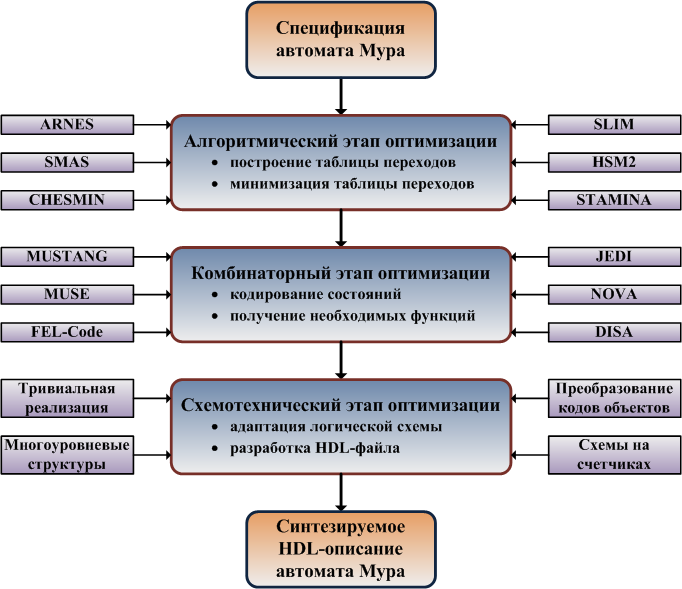
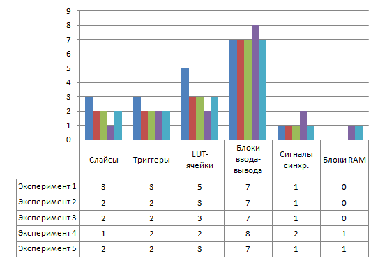

{kind=link}
Реферат по теме выпускной работы
Данный реферат используется в качестве примера с разрешения его автора, магистра ДонНТУ Евгения Татолова.
Оригинал: http://masters.donntu.ru/2011/fknt/tatolov/diss/
Содержание
- Введение
- 1. Актуальность темы
- 2. Цель и задачи исследования, планируемые результаты
- 3. Обзор исследований и разработок
- 3.1 Обзор международных источников
- 3.2 Обзор национальных источников
- 3.3 Обзор локальных источников
- 4. Подход к унификации синтеза автоматов Мура в базисе FPGA
- Выводы
- Список источников
Введение
Цифровые системы находят широкое применение и являются базовыми компонентами компьютерной техники, автоматики, робототехники, производства, транспорта. Создание сверхбольших интегральных схем (СБИС), построение систем-на-кристалле (SoC – System-on-Chip), развитие технологий программируемых пользователем вентильных матриц (FPGAs – Field-Programmable Gate Arrays) и сложных программируемых логических устройств (CPLDs – Complex Programmable Logic Devices) изменили базис реализации цифровых систем и выдвинули повышенные требования к процессу их разработки, что привело к широкому распространению систем автоматизированного проектирования (САПР) и языков описания аппаратуры (HDLs – Hardware Description Languages), которые должны способствовать повышению качества результирующего продукта, интенсификации проектных работ, всестороннему анализу и тестированию. Кроме того, были созданы новые, базисно-ориентированные методы синтеза комбинационных и последовательностных логических схем, наибольшая эффективность от применения которых может быть достигнута путем автоматизации и совместного комбинированного использования с уже известными алгоритмами.
Модель конечного автомата, предложенная Э. Муром в 1956 году и названная в его честь (автомат Мура), как синхронная последовательностная схема, является частью многих цифровых систем и применяется при построении устройств управления. Высокая сложность интегральных схем (которая продолжает повышаться, следуя закону Г. Мура) и теоретический базис автоматных вычислений делает возможной реализацию комплексных алгоритмов обработки информации. Однако, непосредственная реализация алгоритмов может приводить к неэффективному использованию ресурсов кристалла и увеличению стоимости проекта.
1. Актуальность темы
Известен ряд методов аппаратурной оптимизации автомата Мура: минимизация количества состояний и их специфическое кодирование, использование особенностей целевого базиса и алгоритма функционирования, многоуровневая реализация логической схемы. Указанные методы обладают определенной эффективностью, но, для получения наиболее экономичной реализации автомата, должны применяться совместно.
Магистерская работа посвящена актуальной научной задаче разработки унифицированного подхода к синтезу автоматов Мура, направленного на уменьшение аппаратурных затрат в результирующем устройстве и включающего алгоритмические, комбинаторные и схемотехнические оптимизационные приемы. В качестве целевого базиса используются микросхемы FPGA фирмы Xilinx, сочетающие функциональность, программируемость, реконфигурируемость и доступность широкому потребителю, а инструментальными средствами исследования выступают САПР Xilinx ISE, Verilog HDL и Java SE.
2. Цель и задачи исследования, планируемые результаты
Целью исследования является разработка подхода к унификации синтеза автоматов Мура, направленного на уменьшение аппаратурных затрат в целевой FPGA-микросхеме.
Основные задачи исследования:
- Анализ методов минимизации количества состояний в полностью определенных и частичных автоматах Мура.
- Оценка способов уменьшения аппаратурных затрат путем кодирования состояний автоматов Мура.
- Поиск и выявление характеристик существующих методов построения логических схем автоматов Мура и оценка возможностей их применения в базисе FPGA.
- Объединение функционально различных направлений оптимизации автоматов Мура по аппаратурным затратам в унифицированный подход к синтезу и формирование рекомендаций по его использованию.
- Разработка альтернативных вариантов основных этапов унифицированного процесса синтеза автоматов Мура и оценка их эффективности.
Объект исследования: синтез автоматов Мура.
Предмет исследования: объединение методов уменьшения аппаратурных затрат при реализации автоматов Мура в базисе микросхем FPGA.
В рамках магистерской работы планируется получение актуальных научных результатов по следующим направлениям:
- Разработка подхода к унификации синтеза автоматов Мура, ориентированного на уменьшение аппаратурных затрат и включающего последние достижения абстрактной и структурной теории автоматов.
- Определение областей применения различных вариантов основных этапов унифицированного процесса синтеза автоматов Мура.
- Модификация известных методов построения логических схем автоматов Мура и оценка эффективности их применения в базисе FPGA.
Для экспериментальной оценки полученных теоретических результатов и формирования фундамента последующих исследований, в качестве практических результатов планируется разработка кроссплатформенной, настраиваемой и функциональной системы автоматизированного проектирования автоматов Мура (САПРАМ) со следующими свойствами:
- Наличие собственного XML-ориентированного языка описания автоматов Мура.
- Реализация подхода к унификации синтеза автоматов Мура, направленного на базис FPGA-микросхем фирмы Xilinx.
- Возможность управления составом унифицированного процесса синтеза автоматов Мура и вариантами основных его этапов.
- Генерация Verilog-файла, описывающего синтезированный автомат Мура и пригодного для обработки САПР Xilinx ISE с целью погружения в микросхему FPGA.
3. Обзор исследований и разработок
Поскольку автоматы Мура являются важной частью цифровых систем, то проблемы их синтеза, анализа, минимизации и реализации были широко исследованы как американскими, европейскими, японскими учеными, так и отечественными специалистами. Вопросам реализации цифровых устройств с помощью FPGA и Verilog HDL также посвящен ряд работ, в основном, исследователей западной школы.
3.1 Обзор международных источников
Концепция автомата Мура была сформулирована Э. Муром в его статье «Gedanken-experiments on sequential machines» [1]. Там же показана сфера применения моделей с конечным количеством состояний и рассматривается широкий класс проблем абстрактной теории автоматов. Другими источниками информации о классификациях, фундаментальных принципах функционирования, способах представления, математическом смысле и приложениях конечных автоматов могут служить монографии Р. Миллера, А. Гилла, Д. Хопкрофта, М. Минского, М. Ито [2-6].
При разработке цифровых систем, автоматы Мура реализуются как синхронные последовательностные схемы, процессы анализа и синтеза которых подробно изложены в современных книгах по логическому проектированию В. Нельсона, К. Бридинга, Д. Уэйкерли, М. Мано, Б. Уилкинсона и др. [7-16]. Вопросам использования языка описания аппаратуры Verilog при проектировании, моделировании и реализации цифровых устройств посвящены работы П. Чу, М. Чилетти, П. Ашендена, С. Палниткара, А.К. Полякова [17-25]. Микросхемы FPGA – их архитектуры, свойства, области применения – являются предметом рассмотрения у К. Максфилда, И. Гроута, Б. Зайдмана, Р.И. Грушвицкого, А.Х. Мурсаева, Е.П. Угрюмова [26-29].
В классических работах В.М. Глушкова и С.И. Баранова [30, 31] изложена абстрактная и структурная теория автоматов, сформулирован канонический метод структурного синтеза цифрового автомата, разработаны вопросы матричной реализации логических схем.
Минимизация количества состояний автоматов Мура – важный шаг проектирования, поскольку именно количество состояний определяет разрядность кодирующего двоичного слова при структурном синтезе. Подходы к решению этой задачи в разное время разрабатывались и совершенствовались М. Аведилло, Х. Куинтаной и Х. Хуэртасом (алгоритм ARNES, алгоритм SMAS) [32, 33]; Х.-М. Чампарнаудом, А. Хорси и Т. Парантоэном (модификация алгоритма Бржожовски) [34]; С. Гореном и Ф. Фергюсоном (алгоритм CHESMIN) [35]; Х. Хигучи и Ю. Мацунагой (алгоритм SLIM) [36]; Х. Ху, Х.-К. Ксуэ и Д.-Н. Бианом (алгоритм HSM2) [37]; Д.-К. Рхо, Г. Хачтелем, Ф. Соменци и Р. Якоби (алгоритм STAMINA) [38]; Д. Хопкрофтом (наиболее эффективный существующий алгоритм минимизации) [39]; Р. Фурером и С. Новиком (алгоритм OPTIMIST) [40]; Х. Пеной и А. Оливейрой (алгоритм BICA) [41]; Т. Камом, Т. Виллой, Р. Брайтоном и А. Санджиованни-Винцентелли (алгоритм ISM) [42]. Некоторые методы минимизации полностью определенных и частичных автоматов оценены и описаны в работах [14, 43].
Критичным для уровня аппаратурных затрат логической схемы автомата Мура выступает этап кодирования состояний, краткое описание подходов к которому содержится в обзорной статье А. Слюсарчука [44]. В публикациях Д. Де Мишели, Р. Брайтона, А. Санджиованни-Винцентелли, А. Эль-Малеха, С. Саита, Ф. Кхана приведены эффективные алгоритмы кодирования состояний конечных автоматов и устройств управления на их основе [45-48]. Оригинальные способы оптимизации кодирования и многоуровневой реализации рассмотрены в работах С. Девадаса, Х.-К. Ма, А. Ньютона и А. Санджиованни-Винцентелли (алгоритм MUSTANG) [49]; К. Ду, Г. Хачтеля, Б. Лина и А. Ньютона (алгоритм MUSE) [50]; Х. Кубатовой и М. Беквара (алгоритм FEL-Code) [51]; Б. Лина и А. Ньютона (алгоритм JEDI) [52]; Т. Виллы и А. Санджиованни-Винцентелли (алгоритм NOVA) [53]; Б. Гупты, Х. Нараянана и М. Десая (алгоритм Two-Hot Encoding) [54]; М. Мартинеса, М. Аведилло, Х. Куинтаны и Х. Хуэртаса (алгоритм DISA) [55]. Известный унитарный способ кодирования состояний и его приложение к проектированию автоматов для FPGA описаны у С. Голсона [56].
Применение аппарата эволюционных и генетических вычислений к кодированию состояний автоматов рассмотрено в [57-61]. Первые параллельные алгоритмы кодирования состояний, предназначенные для выполнения на высокопроизводительной компьютерной технике, – ProperSTATE и ProperJEDI – были предложены в 1996 году Г. Хастеером в рамках проекта ProperCAD [62]. В 2004 году Д. Бадер и К. Маддури представили параллельный алгоритм кодирования состояний, ориентированный на симметричные мультипроцессорные системы (SMP-системы), относящиеся к классу MIMD [63].
Аппаратурно-оптимальная реализация логической схемы автомата Мура зависит от используемого целевого базиса. В работах А.А. Баркалова, Л.А. Титаренко, С. Хмелевского, А. Буковца, Г. Селварая, М. Равски, Т. Лубы, В.А. Склярова, Р. Червински, Д. Каниа рассматриваются методы построения конечных автоматов на базе CPLD, FPGA и встроенных блоков памяти ROM (Read-Only Memory) [64-68]. В статье А.А. Баркалова, Л.А. Титаренко и О. Хебды предлагается способ нестандартного представления кодов состояний, ориентированный на базис CPLD и позволяющий оптимизировать логическую схему автомата Мура [69]
Комплексный обзор процесса синтеза автоматов Мура и Мили (с акцентом на возможности его автоматизации), а также обширная тематическая библиография содержится в статье М. Перковски [70]. Примером реализованной программной системы синтеза и оптимизации последовательностных схем является SIS, разработанная в Калифорнийском университете (США) и подробно освещенная в работе [71].
3.2 Обзор национальных источников
В Одесском национальном политехническом университете Е.Л. Полиным, К.В. Защелкиным, Ю.А. Ковалевым, Е.Н. Ивановой, А.А. Николенко активно разрабатываются параллельные модели языка граф-схем алгоритмов (ГСА), методы синтеза цифровых управляющих устройств, абстрактные композиционные автоматы, вопросы информационной технологии автоматизированного проектирования микропрограммных автоматов [72-76].
И.В. Васильцовым (Тернопольская академия национальной экономики) предложен эволюционный подход к кодированию внутренних состояний конечного автомата [77], а в статьях Л.А. Шуваловой, Д.Н. Моамара, Т.Ю. Уткиной (Черкасский государственный технологический университет) [78] и С.Н. Сердюка (Запорожский национальный технический университет) [79] рассмотрены возможности автоматизированного анализа, синтеза и верификации цифровых автоматов.
Проектирование цифровых устройств в базисе FPGA подробно освещено в работах В.И. Жабина, Н.А. Ковалева (НТУУ «Киевский политехнический университет») [80] и В.Н. Опанасенко, А.Н. Лисового, Е.В. Сороки (Институт кибернетики им. В.М. Глушкова НАН Украины) [81, 82].
3.3 Обзор локальных источников
В Донецком национальном техническом университете (кафедра компьютерной инженерии) широко разрабатываются методы реализации логических схем конечных автоматов, микропрограммных устройств управления (МУУ) и композиционных микропрограммных устройств управления (КМУУ) в базисах SPLD (Simple Programmable Logic Device), CPLD, FPGA, ASIC (Application Specific Integrated Circuit).
В книгах А.А. Баркалова и Л.А. Титаренко детально рассмотрены алгоритмы построения управляющих (УА) и операционных (ОА) автоматов, объединяемых для реализации цифровых устройств [83-85]. В качестве одного из способов организации УА часто используются автоматы Мура и Мили [30], исследование аппаратурной оптимизации которых позволило авторам разработать ряд оригинальных подходов к синтезу логических схем УА с «жесткой логикой»: многоуровневые структуры, принцип преобразования кодов объектов, возможности модификации исходных граф-схем алгоритмов (ГСА), реализации на счетчиках, использование блоков памяти.
Статьи А.А. Баркалова, С.А. Ковалева, С.А. Цололо, А.В. Матвиенко, В.А. Саломатина, А.А. Красичкова посвящены оптимизации логической схемы автомата Мура, реализуемой на CPLD, однородных программируемых логических интегральных схемах (ПЛИС), FPGA [86-90]. Авторы предлагают использовать понятие псевдоэквивалентности состояний, особенности целевого базиса, специфические способы кодирования внутренних состояний. Для эффективной реализации автоматов Мура на заказных схемах (ASICs), А.А. Баркаловым, Р.В. Мальчевой и К.А. Солдатовым были предложены метод кодирования наборов микроопераций и принцип расширения кодов состояний перехода [91, 92].
Тематика адаптации UML (Unified Modeling Language), MDA (Model-Driven Architecture) и высокопроизводительных компьютерных технологий (параллельных и распределенных систем) к синтезу и моделированию УА широко освещена в публикациях А.А. Баркалова, И.Я. Зеленёвой, А.А. Гриценко, С.А. Ковалева [93-96].
4. Подход к унификации синтеза автоматов Мура в базисе FPGA
Первые микросхемы FPGA были разработаны фирмой Xilinx в 1984 году и приобрели большую популярность, благодаря возможности реализации сложных функций и относительно небольшой стоимости. Современные FPGA сочетают программируемость SPLD и CPLD, сохраняя основное преимущество ASIC – объем реализуемых функций [27].
Неоптимизированные проекты цифровых систем, независимо от базиса реализации, могут иметь значительную избыточность и, следовательно, неэффективно использовать аппаратные ресурсы [84]. Это приводит к актуализации задачи аппаратурной оптимизации, которая, в контексте FPGA, сводится к снижению процента использования тех или иных внутренних блоков: LUT-элементов (LUT – Look-Up Table), модулей памяти, схем синхронизации.
Аппаратурно-оптимальная реализация автоматов Мура требует совместного применения результатов абстрактной и структурной теории автоматов: минимизации количества состояний (уменьшение мощности множества состояний автомата и, как следствие, разрядности двоичного кода состояния), эффективного кодирования состояний (снижение уровня затрат при реализации функций следующего состояния), адаптации логической схемы к используемому базису (качественное распределение ресурсов кристалла за счет использования встроенных блоков памяти и особенностей организации внутренних модулей).
В статье [97] предлагается подход к унификации синтеза автоматов Мура, объединяющий указанные возможности оптимизации и направленный на базис микросхем FPGA (рис. 1). Сущность этого подхода заключается в последовательном применении алгоритмического, комбинаторного и схемотехнического этапов и использовании FPGA-ориентированных инструментальных средств: САПР и HDLs.

Рисунок 1 – Подход к унификации синтеза автоматов Мура
На первом шаге алгоритмического этапа синтеза, произвольная спецификация автомата Мура приводится к единому виду – таблице переходов. Необходимость приведения связана с тем, что автомат Мура может быть задан с использованием различных форм представления: граф-схем, диаграмм состояний, ASM-диаграмм (ASM – Algorithmic State Machine) [13, 14, 83]. Второй шаг алгоритмического этапа состоит в минимизации количества состояний таблицы переходов. Для этого могут использоваться алгоритмы Бржожовски, ARNES, SMAS, CHESMIN, SLIM, HSM2, STAMINA, OPTIMIST, BICA, ISM [14, 32-43].
Комбинаторный этап направлен на эффективное кодирование состояний минимизированной таблицы переходов, а также получение аппаратурно-минимальных функций следующего состояния и, при необходимости, выходных функций автомата. Значительное влияние способа кодирования состояний на параметры результирующей логической схемы обусловило разработку различных подходов, направленных на снижение расхода мощности, повышение быстродействия, минимизацию аппаратурных затрат. Последний из этих подходов может быть использован на комбинаторном этапе синтеза путем применения, адаптации или модификации алгоритмов MUSTANG, MUSE, FEL-Code, JEDI, NOVA, Two-Hot Encoding, DISA, унитарного и позиционно-двоичного кодирования состояний [44-63, 84].
Схемотехнический этап процесса синтеза предполагает использование методов построения логической схемы автомата Мура, направленных на уменьшение аппаратурных затрат целевой микросхемы. К таким методам относятся тривиальные и многоуровневые реализации, структуры с преобразованием кодов объектов, схемы на счетчиках [84]. Поскольку современное цифровое проектирование на микросхемах FPGA ориентировано на использование HDLs (в основном, VHDL и Verilog), то вторым шагом схемотехнического этапа выступает разработка HDL-программы, описывающей автомат Мура и пригодной для обработки соответствующей САПР и погружения в микросхему.
Описанный унифицированный процесс синтеза может быть с успехом реализован автоматизированно и предполагать только управленческие функции пользователя: описание автомата Мура и выбор используемых алгоритмов и структур. Кроме того, представленный подход может применяться к ряду других современных базисов (CPLD, ASIC) и определять общее направление оптимизационных работ при синтезе логических последовательностных схем.
Для оценки эффективности применения унифицированного процесса синтеза к конкретному примеру, были разработаны пять Verilog-программ, описывающих заданный автомат Мура [8]различными способами:
- Реализация неминимизированного автомата Мура с помощью анализатора XST (Xilinx Synthesis Technology) [98] (эксперимент 1).
- Реализация минимизированного автомата Мура с помощью анализатора XST (эксперимент 2).
- Реализация минимизированного автомата Мура по двухуровневой схеме [85] с позиционно-двоичным кодированием состояний. Использование ROM с асинхронным чтением [98] (эксперимент 3).
- Реализация минимизированного автомата Мура по двухуровневой схеме с позиционно-двоичным кодированием состояний. Использование ROM с синхронным чтением [98] и дополнительного сигнала синхронизации (эксперимент 4).
- Реализация минимизированного автомата Мура по двухуровневой схеме с позиционно-двоичным кодированием состояний. Использование ROM с синхронным чтением и заднего фронта основного сигнала синхронизации (эксперимент 5).
Все исследования проводились с помощью САПР Xilinx ISE 13.1 для семейства FPGA Xilinx Spartan-3, а именно для микросхемы XC3S200. Результаты совокупных аппаратурных затрат для пяти вариантов реализации графически показаны на рис. 2.

Рисунок 2 – Результаты экспериментальных исследований
Если целью оптимизации являлось количество LUT-ячеек, то лучший результат был получен при использовании двухуровневой реализации минимизированного автомата Мура с синхронным ROM и двумя сигналами синхронизации (эксперимент 4). По сравнению с экспериментом 1, количество слайсов уменьшилось в 3 раза, количество триггеров – в 1,5 раза, а количество LUT-ячеек – в 2,5 раза. Однако, в этом случае увеличилось общее количество выводов схемы, количество сигналов синхронизации и был задействован один модуль RAM (Random Access Memory).
Выводы
Качественный синтез цифровых систем, и автоматов Мура в частности, является одним из направлений логического проектирования и представляет не только теоретико-исследовательский, но и практический интерес. Разработка оптимальных цифровых устройств открывает путь к более полному использованию возможностей базиса реализации, «уплотнению» проектов, уменьшению материальных затрат.
Магистерская работа посвящена актуальной научной задаче объединения основных методов аппаратурной минимизации автоматов Мура. В рамках проведенных исследований выполнено:
- Разработана структура унифицированного процесса синтеза автоматов Мура и определены функции ее составляющих.
- На основании анализа литературных источников выделены основные алгоритмы, которые могут быть использованы в предложенном подходе к унификации синтеза автоматов Мура.
- Проведен ряд экспериментов по использованию унифицированного процесса синтеза автоматов Мура, проанализированы полученные результаты.
- Рассмотрены возможности комплексной автоматизации разработанного подхода к унификации синтеза автоматов Мура, оценены требования к программному обеспечению, выполнен поиск функционально подобных программных продуктов синтеза последовательностных логических схем.
Дальнейшие исследования направлены на следующие аспекты:
- Качественное совершенствование предложенного подхода к унификации синтеза автоматов Мура, его дополнение и расширение.
- Определение границ эффективности различных вариантов основных этапов унифицированного процесса синтеза автоматов Мура.
- Адаптация известных методов построения логических схем автоматов Мура к базису FPGA.
- Разработка кроссплатформенной и функциональной системы автоматизированного проектирования автоматов Мура (САПРАМ), реализующей предложенный унифицированный процесс синтеза.
При написании данного реферата магистерская работа еще не завершена. Окончательное завершение: декабрь 2011 года. Полный текст работы и материалы по теме могут быть получены у автора или его руководителя после указанной даты.
Список источников
- Moore E.F. Gedanken-experiments on sequential machines / E.F. Moore // Automata studies, Annals of mathematical studies. – 1956. – vol. 34. – pp. 129-153.
- Гилл А. Введение в теорию конечных автоматов / А. Гилл. – М.: Наука, 1966. – 272 с.
- Миллер Р. Теория переключательных схем / Р. Миллер. – М.: Наука, 1971. – Том 2: Последовательностные схемы и машины. – 304 с.
- Минский М. Вычисления и автоматы / М. Минский. – М.: Мир, 1971. – 364 с.
- Хопкрофт Д. Введение в теорию автоматов, языков и вычислений / Д. Хопкрофт, Р. Мотвани, Д. Ульман. – М.: Издательский дом «Вильямс», 2002. – 528 с.
- Ito M. Algebraic theory of automata and languages / M. Ito. – World Scientific Publishing, 2004. – 199 pp.
- Голдсуорт Б. Проектирование цифровых логических устройств / Б. Голдсуорт. – М.: Машиностроение, 1985. – 288 с.
- Уилкинсон Б. Основы проектирования цифровых схем / Б. Уилкинсон. – М.: Издательский дом «Вильямс», 2004. – 320 с.
- Уэйкерли Д. Проектирование цифровых устройств / Д. Уэйкерли. – М.: Постмаркет, 2002. – Том 2. – 528 с.
- Breeding K. Digital design fundamentals / K. Breeding. – Prentice Hall, 1992. – 446 pp.
- Holdsworth B. Digital logic design / B. Holdsworth, C. Woods. – Prentice Hall, 2002. – 519 pp.
- Lala P. Principles of modern digital design / P. Lala. – Wiley, 2007. – 419 pp.
- Mano M. Digital design / M. Mano. – Prentice Hall, 2003. – 516 pp.
- Nelson V. Digital logic circuit analysis and design / V. Nelson, H. Nagle, J. Irwin, B. Carroll. – Prentice Hall, 1995. – 842 pp.
- Shiva S. Introduction to logic design / S. Shiva. – CRC Press, 1998. – 628 pp.
- Singh A. Foundation of switching theory and logic design / A. Singh. – New Age International, 2008. – 412 pp.
- Поляков А.К. Языки VHDL и VERILOG в проектировании цифровой аппаратуры / А.К. Поляков. – М.: СОЛОН-Пресс, 2003. – 320 с.
- Ashenden P. Digital design: an embedded systems approach using Verilog / P. Ashenden. – Morgan Kaufmann Publishers, 2008. – 557 pp.
- Chu P. FPGA prototyping by Verilog examples / P. Chu. – Wiley, 2008. – 488 pp.
- Ciletti M. Advanced digital design with the Verilog HDL / M. Ciletti. – Prentice Hall, 2005. – 986 pp.
- Minns P. FSM-based digital design using Verilog HDL / P. Minns, I. Elliott. – Wiley, 2008. – 391 pp.
- Lee J. Verilog quickstart: a practical guide to simulation and synthesis in Verilog / J. Lee. – Springer, 2002. – 355 pp.
- Lee W. Verilog coding for logic synthesis / W. Lee. – Wiley, 2003. – 336 pp.
- Padmanabhan T. Design through Verilog HDL / T. Padmanabhan, B. Bala Tripura Sundari. – Wiley, 2004. – 455 pp.
- Palnitkar S. Verilog HDL. A guide to digital design and synthesis / S. Palnitkar. – SunSoft Press, 1996. – 396 pp.
- Грушвицкий Р.И. Проектирование систем на микросхемах программируемой логики / Р.И. Грушвицкий, А.Х. Мурсаев, Е.П. Угрюмов. – СПб.: БХВ-Петербург, 2002. – 608 с.
- Максфилд К. Проектирование на ПЛИС. Курс молодого бойца / К. Максфилд. – М.: Издательский дом «Додэка-XXI», 2007. – 408 с.
- Grout I. Digital systems design with FPGAs / I. Grout. – Elsevier, 2008. – 724 pp.
- Zeidman B. Designing with FPGAs and CPLDs / B. Zeidman. – Elsevier, 2002. – 224 pp.
- Баранов С.И. Синтез микропрограммных автоматов (граф-схемы и автоматы) / С.И. Баранов. – Л.: Энергия, 1979. – 232 с.
- Глушков В.М. Синтез цифровых автоматов / В.М. Глушков. – М.: Государственное издательство физико-математической литературы, 1962. – 476 с.
- Avedillo M.J. New approach to the state reduction in incompletely specified sequential machines / M.J. Avedillo, J.M. Quintana, J.L. Huertas // Proceedings of IEEE International Symposium on Circuits and Systems. – New Orleans, 1990. – pp. 440-443.
- Avedillo M.J. SMAS: a program for the concurrent state reduction and state assignment of finite state machines / M.J. Avedillo, J.M. Quintana, J.L. Huertas // Proceedings of IEEE International Symposium on Circuits and Systems. – 1991. – vol. 3. – pp. 1781-1784.
- Champarnaud J.-M. Split and minimizing: Brzozowski's algorithm / J.-M. Champarnaud, A. Khorsi, T. Paranthoen // Prague Stringology Conference. – Prague, 2002. – pp. 96-104.
- Goren S. CHESMIN: a heuristic for state reduction in incompletely specified finite state machines / S. Goren, F. Ferguson // Proceedings of the Conference on Design, Automation and Test in Europe. – 2002. – pp. 248-254.
- Higuchi H. A fast state reduction algorithm for incompletely specified finite state machines / H. Higuchi, Y. Matsunaga // 33rd Annual Conference of Design Automation. – Las Vegas, 1996. – pp. 463-466.
- Hu H. HSM2: a new heuristic state minimization algorithm for finite state machine / H. Hu, H.-X. Xue, J.-N. Bian // Journal of Computer Science and Technology. – 2004. – № 19 (5). – pp. 729-733.
- Rho J.-K. Exact and heuristic algorithms for the minimization of incompletely specified state machines / J.-K. Rho, G. Hachtel, F. Somenzi, R. Jacoby // IEEE Transactions on Computer-Aided Design. – 1994. – vol. 13. – pp. 167-177.
- Xu Y. Describing an n log n algorithm for minimizing states in deterministic finite automaton [Электронный ресурс]. – Режим доступа: http://www.cs.sun.ac.za....
- Fuhrer R.M. OPTIMIST: state minimization for optimal 2-level logic implementation / R.M. Fuhrer, S.M. Nowick // Proceedings of International Conference of Computer-Aided Design. – 1997. – pp. 308-315.
- Pena J.M. A new algorithm for exact reduction of incompletely specified finite state machines / J.M. Pena, A.L. Oliveira // IEEE Transactions on Computer-Aided Design of Integrated Circuits and Systems. – 1999. – vol. 18 (11). – pp. 1619-1632.
- Kam T. A fully implicit algorithm for exact state minimization / T. Kam, T. Villa, R. Brayton, A. Sangiovanni-Vincentelli // Proceedings of the Design Automation Conference. – 1994. – pp. 684-690.
- Almeida M. On the performance of automata minimization algorithms / M. Almeida, N. Moreira, R. Reis // Technical Report Series: DCC-2007-03. – 2007. – 12 pp.
- Slusarczyk A. State assignment techniques – short review [Электронный ресурс]. – Режим доступа: http://web.cecs.pdx.edu/~mperkows....
- De Micheli G. KISS: a program for optimal state assignment of finite state machines / G. De Micheli, R. Brayton, A. Sangiovanni-Vincentelli // Proceedings of IEEE International Conference of Computer-Aided Design. – Santa Clara, 1984. – pp. 209-211.
- De Micheli G. Optimal state assignment for finite state machines / G. De Micheli, R. Brayton, A. Sangiovanni-Vincentelli // IEEE Transactions on Computer-Aided Design. – 1985. – pp. 269-285.
- De Micheli G. Optimal encoding of control logic / G. De Micheli // Proceedings of the International Conference on Circuits and Computer Design. – 1984. – pp. 16-22.
- El-Maleh A. Finite state machine state assignment for area and power minimization / A. El-Maleh, S.M. Sait, F.N. Khan // Proceedings of IEEE International Symposium on Circuits and Systems. – 2006. – pp. 5303-5306.
- Devadas S. MUSTANG: state assignment of finite state machines targeting multilevel logic implementations / S. Devadas, H.-K. Ma, A.R. Newton, A. Sangiovanni-Vincentelli // IEEE Transactions on Computer-Aided Design of Integrated Circuits and Systems. – 1998. – vol. 7 (12). – pp. 1290-1300.
- Du X. MUSE: a multilevel symbolic encoding algorithm for state assignment / X. Du, G. Hachtel, B. Lin, A.R. Newton // IEEE Transactions on Computer-Aided Design of Integrated Circuits and Systems. – 1991. – vol. 10 (1). – pp. 28-38.
- Kubatova H. FEL-Code: FSM internal state encoding method / H. Kubatova, M. Becvar // Proceedings of 5th International Workshop on Boolean Problems. – Freiberg, 2002. – pp. 109-114.
- Lin B. Synthesis of multiple level logic from symbolic high-level description languages / B. Lin, A.R. Newton // Proceedings of the International Conference on VLSI. – Munich, 1989. – pp. 187-196.
- Villa T. NOVA: state assignment of finite-state machines for optimal two-level logic implementation / T. Villa, A. Sangiovanni-Vincentelli // IEEE Transactions on Computer-Aided Design. – 1990. – pp. 905-924.
- Gupta, B.N.V.M. A state assignment scheme targeting performance and area / B.N.V.M. Gupta, H. Narayanan, M.P. Desai // Proceedings of 12th International Conference on VLSI Design. – 1999. – pp. 378-383.
- Martinez M. A dynamic model for the state assignment problem / M. Martinez, M.J. Avedillo, J.M. Quintana, J.L. Huertas // Proceedings of Design, Automation and Test in Europe. – Paris, 1998. – pp. 835-839.
- Golson S. One-hot state machine design for FPGAs / S. Golson // Proceedings of the 3rd PLD Design Conference. – Santa Clara, 1993. – pp. 1-6.
- Almaini A. State assignment of finite state machines using a genetic algorithm / A. Almaini, J. Miller, P. Thomson, S. Billina // IEEE Proceedings on Computer and Digital Techniques. – 1995. – pp. 279-286.
- Amaral J. Designing genetic algorithms for the state assignment problem / J. Amaral, K. Turner, J. Chosh // IEEE Transactions on Systems, Man, and Cybernetics. – 1995. – vol. 25. – pp. 659-694.
- Chyzy M. Evolutionary algorithm for state assignment of finite state machines / M. Chyzy, W. Kosinski // Artificial Intelligence Methods. – Gliwice, 2003. – pp. 51-52.
- Nedjah N. Evolutionary synthesis of synchronous finite state machines / N. Nedjah, L.M. Mourelle // Evolvable Machines. – Berlin, 2004. – pp. 103-128.
- Chattopadhyay S. Area conscious state assignment with flip-flop and output polarity selection for finite state machine synthesis – a genetic algorithm approach / S. Chattopadhyay // The Computer Journal. – 2005. – vol. 48 (4). – pp. 443-450.
- Hasteer G. Parallel algorithms for state assignment of finite state machines. Master's thesis. – University of Illinois, 1996. – 58 pp.
- Bader D.A. A parallel state assignment algorithm for finite state machines / D.A. Bader, K. Madduri // Proceedings of IEEE Conference on High-Performance Computing. – Bangalore, 2004. – pp. 297-308.
- Sklyarov V. Synthesis and implementation of RAM-based finite state machines in FPGAs / V. Sklyarov // Proceedings of Conference on Field Programmable Logic. – Villach, 2000. – pp. 718-728.
- Barkalov A. Optimization of Moore FSM implemented with CPLD based on PAL macrocells / A. Barkalov, L. Titarenko, S. Chmielewski // Радиотехника. – 2008. – № 155. – pp. 191-195.
- Bukowiec A. State machines synthesis and implementation into FPGAs with multiple encoding of states / A. Bukowiec, A. Barkalov, L. Titarenko // Radioelectronics and Informatics. – 2008. – № 4. – pp. 43-48.
- Czerwinski R. Synthesis of finite state machines for CPLDs / R. Czerwinski, D. Kania // International Journal of Applied Mathematics and Computer Science – Special Section: Robot Control Theory. – 2009. – vol. 19 (4). – pp. 647-659.
- Selvaraj H. FSM implementation in embedded memory blocks of programmable logic devices using functional decomposition / H. Selvaraj, M. Rawski, T. Luba // Proceedings of International Conference on Information Technology: Coding and Computing. – Las Vegas, 2002. – pp. 355-360.
- Barkalov A. Synthesis of Moore finite state machine with nonstandard presentation of state codes / A. Barkalov, L. Titarenko, O. Hebda // Proceedings of KNWS'2010. – Swinoujscie, 2010. – pp. 11-14.
- Perkowski M. Digital design automation – finite state machine design [Электронный ресурс]. – Режим доступа: http://web.cecs.pdx.edu/~mperkows....
- Sentovich E.M. SIS: a system for sequential circuit synthesis / E.M. Sentovich, K.J. Singh, L. Lavagno, C. Moon, R. Murgai, A. Saldanha, H. Savoj, P.R. Stephan, R.K. Brayton, A. Sangiovanni-Vincentelli // Technical Report UCB/ERL M92/41. – Berkley, 1992. – 52 pp.
- Защелкин К.В. Информационная технология автоматизированного проектирования цифровых управляющих устройств / К.В. Защелкин, Е.Н. Иванова // Электромашиностроение и электрооборудование. – 2009. – № 72. – С. 68-72.
- Николенко А.А. Алгоритмические особенности автоматизированного проектирования микропрограммных автоматов / А.А. Николенко, Ю.А. Ковалев, К.В. Защелкин // Электромашиностроение и электрооборудование. – 2000. – № 54. – С. 91-95.
- Полин Е.Л. Абстрактные композиционные автоматы / Е.Л. Полин, К.В. Защелкин // Труды Одесского политехнического университета. – Одесса, 2006. – № 1 (25). – С. 88-94.
- Полин Е.Л. Параллельная модель языка граф-схем алгоритмов и ее интерпретация абстрактными автоматами / Е.Л. Полин, К.В. Защелкин // Электромашиностроение и электрооборудование. – 2005. – № 65. – С. 70-79.
- Полин Е.Л. Язык кластерных граф-схем алгоритмов и основанный на нем метод синтеза цифровых управляющих устройств / Е.Л. Полин, К.В. Защелкин // Электромашиностроение и электрооборудование. – 2008. – № 71. –С. 68-73.
- Vasiltsov I. Evolutionary technique to elementary coding of the internal states of the state machine / I. Vasiltsov // Proceedings of the 2002 NASA/DoD Conference on Evolvable Hardware. – 2002. – pp. 63-64.
- Шувалова Л.А. Структура программного комплекса синтеза и верификации моделей цифровых автоматов / Л.А. Шувалова, Д.Н. Моамар, Т.Ю. Уткина // Системи обробки інформації. – Харьков, 2010. – № 5. – С. 149-152.
- Сердюк С.М. Аналізатор скінченних цифрових автоматів / С.М. Сердюк // Вісник Житомирського державного технологічного університету. – Житомир, 2010. – № 1 (52). – С. 146-151.
- Жабин В.И. Исследование методов построения вычислительных устройств на основе FPGA / В.И. Жабин, Н.А. Ковалев // Технология и конструирование в электронной аппаратуре. – 2002. – № 2. – С. 35-39.
- Опанасенко В.Н. Проектирование и физическая верификация цифровых устройств на ПЛИС / В.Н. Опанасенко, А.Н. Лисовый, Е.В. Сорока // Комп'ютерні засоби, мережі та системи. – 2008. – № 7. – С. 76-85.
- Опанасенко В.М. Формалізація процесу проектування обчислювальних пристроїв та систем на базі ПЛІС / В.М. Опанасенко, О.М. Лісовий // Комп'ютерні засоби, мережі та системи. – 2009. – № 8. – С. 58-63.
- Barkalov A.A. Synthesis of operational and control automata / A.A. Barkalov, L.A. Titarenko. – Donetsk: DonNTU, TechPark DonNTU UNITECH, 2009. – 256 pp.
- Баркалов А.А. Синтез микропрограммных автоматов на заказных и программируемых СБИС / А.А. Баркалов, Л.А. Титаренко. – Донецк: ДонНТУ, Технопарк ДонНТУ УНИТЕХ, 2009. – 336 с.
- Баркалов А.А. Синтез устройств управления на программируемых логических устройствах / А.А. Баркалов. – Донецк: ДонНТУ, 2002. – 262 с.
- Баркалов А.А. Оптимизация схемы МПА Мура на CPLD / А.А. Баркалов, С.А. Ковалев, С.А. Цололо // Материалы Восьмого международного научно-практического семинара «Практика и перспективы развития партнерства в сфере высшей школы». – Донецк-Таганрог, 2007. – Том 3. – С. 26-36.
- Баркалов А.А. Оптимизация логической схемы автомата Мура на FPGA / А.А. Баркалов, А.А. Красичков, С.А. Цололо // Наукові праці ДонНТУ. – Донецк, 2006. – (Серия «Проблеми моделювання та автоматизації проектування динамічних систем»). – № 5 (116). – С. 162-168.
- Баркалов А.А. Оптимизация логической схемы автомата Мура на CPLD / А.А. Баркалов, А.В. Матвиенко, С.А. Цололо // Комп'ютерні засоби, мережі та системи. – 2007. – № 6. – С. 46-51.
- Баркалов А.А. Оптимизация схемы автомата Мура на однородных ПЛИС / А.А. Баркалов, А.В. Матвиенко, С.А. Цололо // Комп'ютерні засоби, мережі та системи. – 2009. – № 8. – С. 45-51.
- Баркалов А.А. Исследование смешанного кодирования состояний для автомата Мура / А.А. Баркалов, В.А. Саломатин, А.А. Красичков, С.А. Цололо // Материалы III научно-практической конференции «Донбас-2020: наука і техніка – виробництву». – Донецк, 2006. – С. 459-562.
- Баркалов А.А. Матричная реализация автомата Мура с кодированием наборов микроопераций / А.А. Баркалов, Р.В. Мальчева, К.А. Солдатов // Наукові праці ДонНТУ. – Донецк, 2010. – (Серия «Проблеми моделювання та автоматизації проектування»). – № 8 (168). – С. 133-143.
- Баркалов А.А. Матричная реализация автомата Мура с расширением кодов состояний перехода / А.А. Баркалов, Р.В. Мальчева, К.А. Солдатов // Наукові праці ДонНТУ. – Донецк, 2010. – (Серия «Інформатика, кібернетика та обчислювальна техніка»). – № 11 (164). – С. 79-83.
- Баркалов А.А. Адаптация MDA для моделирования управляющих автоматов в стандартах UML / А.А. Баркалов, И.Я. Зеленёва, А.А. Гриценко // Радіоелектроніка, інформатика, управління. – Запорожье, 2006. – № 1 (15). – С. 33-37.
- Баркалов А.А. Проектирование и реализация цифровых систем управления с использованием MDA / А.А. Баркалов, И.Я. Зеленёва, А.А. Гриценко // Материалы III научно-практической конференции «Донбас-2020: наука і техніка – виробництву». – Донецк, 2006. – С. 463-467.
- Баркалов А.А. Синтез управляющих автоматов с использованием распределенных и параллельных систем // А.А. Баркалов, И.Я. Зеленёва, А.А. Гриценко // Радіоелектроніка, інформатика, управління. – Запорожье, 2010. – № 1 (22). – С. 128-134.
- Баркалов А.А. Модельно-ориентированный подход к разработке САПР управляющих автоматов / А.А. Баркалов, И.Я. Зеленёва, С.А. Ковалев, А.А. Гриценко // Материалы Пятого международного научно-практического семинара «Практика и перспективы развития партнерства в сфере высшей школы». – Донецк-Таганрог, 2006. – Том 1. – С. 38-43.
- Ковалев С.А. Подход к унификации процесса синтеза МПА Мура для FPGA / С.А. Ковалев, И.Я. Зеленёва, Е.Р. Татолов // Материалы Двенадцатого международного научно-практического семинара «Практика и перспективы развития партнерства в сфере высшей школы». – Донецк-Таганрог, 2011. – Том 2. – С. 45-48.
- XST User Guide for Virtex-4, Virtex-5, Spartan-3, and Newer CPLD Devices [Электронный ресурс]. – Режим доступа: http://www.xilinx.com/support....